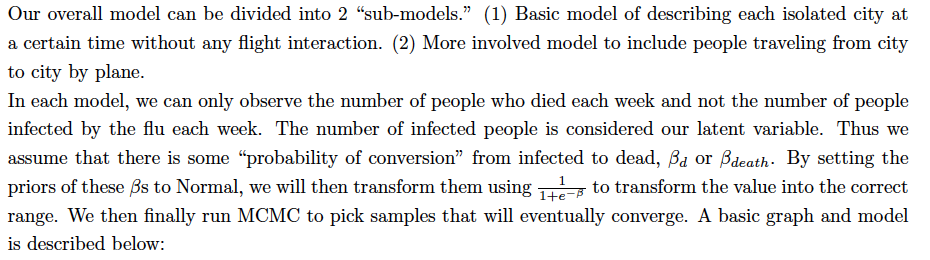
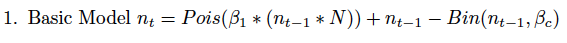
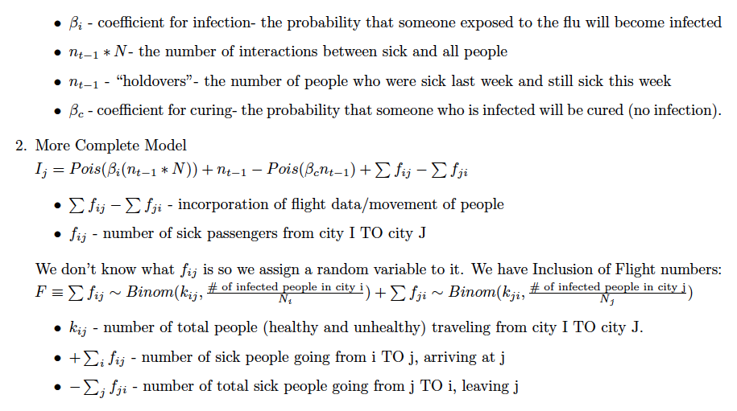
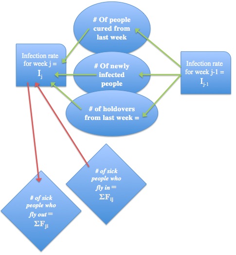
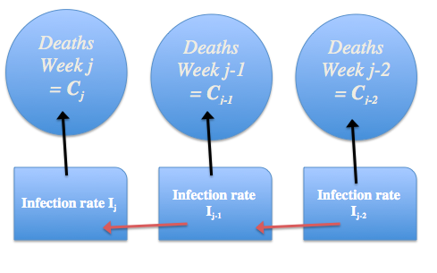

Data Science
The Flu that Flew: A Final Project
- Kevin Eskici, Angela Fan, Mark Krass, Alice Zhao -
HOME
METHODOLOGY
CODE
GALLERY
How can we predict Influenza deaths?
    
This website was inspired by: http://harvardchinacare.org/benefit2012
The Flu that Flew